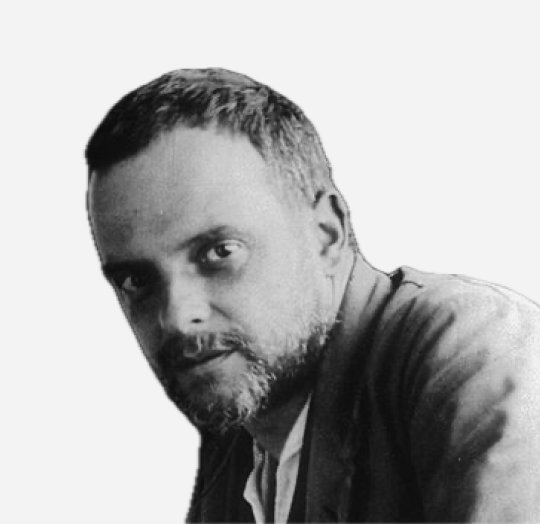
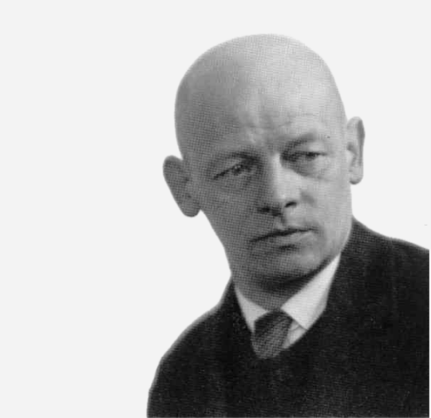
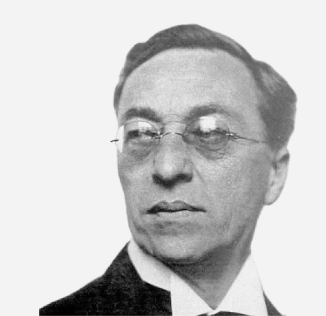
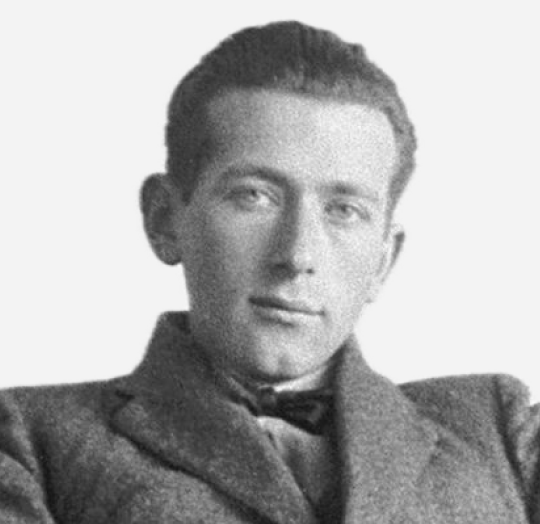
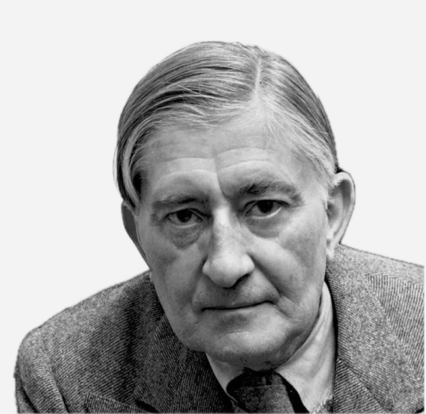
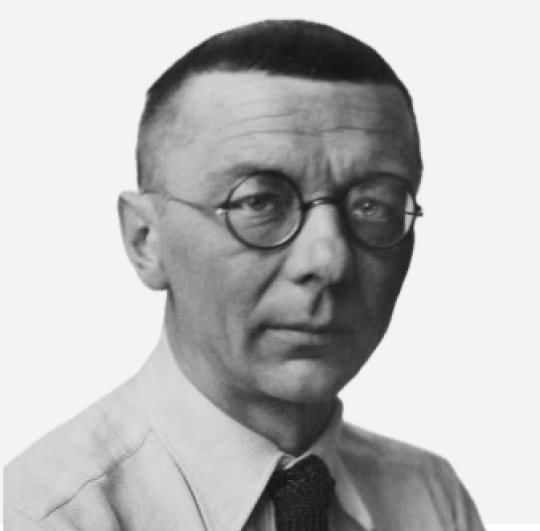
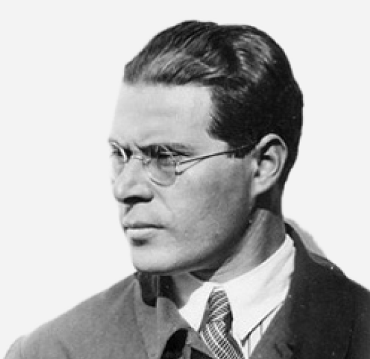
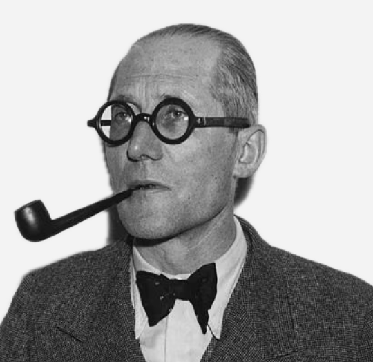

I maestri

Paul Knee

Oscar Schlemmer

Wassily Kandinsky

Marcel Breuer

Josef Albers

Joost Schmidt

Lazlo Mohily - Nagy

Le Corbusier
I maestri del Bauhaus erano spesso artisti noti, in attività, capaci
di stimolare gli allievi.
Tra i più noti i pittori: Vasilij V. Kandinskij, Paul Klee, Josef Albers,
lo scultore Oskar Schlemmer (impegnato anche nella sezione
delle scenografie teatrali), l'ungherese Laszlo Moholy-Nagy
insegnava nella sezione della lavorazione dei metalli,
occupandosi inoltre della grafica: gran parte della grafica moderna
e dello stile d'impaginazione dei nostri libri deriva dal Bauhaus.
La disciplina più importante era considerata tuttavia l'architettura,
intesa come sintesi delle diverse arti.
Veniva insegnata da Adolf Meyer, architetto collaboratore di
Gropius nel progetto del nuovo edificio della scuola.